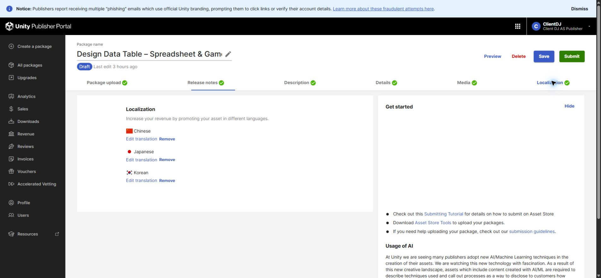
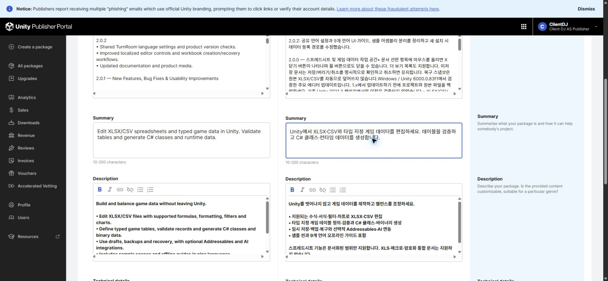

Tracefolio REPORTS & ISSUES
Tracefolio REPORTS & ISSUESDesign Data Table · 판매 페이지 번역 마무리
완료한국어·일본어·중국어 판매 설명과 기술정보를 저장하고 새 로딩 후18개 필드를 확인했습니다.
작업 결과
판매 초안을 저장하고 재열기·서버 값 대조를 마쳤습니다. 최종 제출은 누르지 않았습니다.
변경 내용
적용 내용
기존한국어·일본어·중국어 설명을 현재2.0.2 내용으로 갱신하고, 이전 변경 이력은 보존했습니다. 제목·요약·설명·기술정보·변경 이력·AI 고지를 각 언어로 저장했습니다. 제품 내부9개 언어와 포털의 판매 언어는 별도로 구분합니다.


검증
입력 직후의 화면에 그치지 않고 포털 문서를 새로 불러온 뒤3개 번역의6개 필드를 원본과 대조했습니다. 제품별18개, 전체72개 필드가 일치했습니다. 일부 제목과 변경 이력이 처음에는 남지 않아 실패 기록을 보존하고 별도 저장·새 로딩으로 재검증했습니다.
한국어 저장값 · 일본어 저장값 · 중국어 저장값 · 최종 검증
남은 사항
스토어 최종 제출·심사는 별도입니다. 포털이 제공하는 번역 언어는 한국어·일본어·중국어이며 제품 UI의9개 언어와 다릅니다. 긴 변경 이력이 저장되지 않은 원인은 미확인으로 남겼고, 새 프리뷰 제품은 간결한 첫 출시 문구가 실제 저장됨을 확인했습니다. 기능 설명은 본문·기술정보에 유지했습니다. Affinity GIF 출력은 미검증이므로 실제 원본 정지 화면을 제공합니다.
교훈 검토: 기존 전역 판매 페이지 규칙에 포털 언어별 필드와 전체 새로고침 후 값 대조를 통합했습니다. Sync.ps1 Push와 설치본·저장소 해시 일치를 확인했습니다(5562033b). 다른 실행 중 대화의 자동 반영은 주장하지 않습니다.
작업 시간
- 제안 시간: 30~60분
- 실제로 완료된 시간: 공동 작업 25분 4초. 판매 저장 검증 완료2026-11-02 13:35:17 KST, 보고서 작성 확인 2026-11-02 13:40:18 KST. 시작2026-11-02 13:15:15 KST. 공개 배포는 이어서 확인합니다.
- XERJ: 사용 — TemplateTextCatalog를 XERJ로 검색하고 현재 소스와 대조했습니다. 판매 페이지는 실제 포털 DOM·저장값, 성능은 원시 측정 JSON을 확인했습니다.